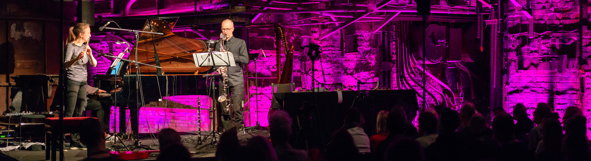

        <h3>Performances</h3>
        <br>
        
        <div class="image_caption2">Performance of <a href="works/straatmuziek.php"><em>Straatmuziek</em>
          </a>by <a href="http://www.defunensemble.fi">Defunensemble</a> at the
          <a href="https://www.worldmusicdays2019.ee/et/">2019 ISCM World Music
            Days</a>, Tallinn
          <div class="photo_credit3">(Photo: Rene Jakobson)</div>
        </div>

{%- comment -%}
  Dates end in either a four-digit year or a two-digit year (DD.MM.YY
  and Mon-YY). Interpret 00–49 as 2000–2049 and 50–99 as 1950–1999.
  Keep a year for each CSV row, then display distinct years newest first.
  Preserve CSV order within each year, including partial dates and ranges.
{%- endcomment -%}
{%- capture row_years_text -%}
  {%- for performance in site.data.performances_master -%}
    {%- assign date_text = performance.date | strip -%}
    {%- assign year_suffix = date_text | slice: -4, 4 -%}
    {%- assign year_number = year_suffix | plus: 0 -%}
    {%- if year_number >= 1000 -%}
      {{- year_suffix -}}
    {%- else -%}
      {%- assign short_year = date_text | slice: -2, 2 | plus: 0 -%}
      {%- if short_year < 50 -%}
        {{- short_year | plus: 2000 -}}
      {%- else -%}
        {{- short_year | plus: 1900 -}}
      {%- endif -%}
    {%- endif -%}
    {%- unless forloop.last -%}|{%- endunless -%}
  {%- endfor -%}
{%- endcapture -%}
{%- assign row_years = row_years_text | split: "|" -%}
{%- assign years = row_years | uniq | sort | reverse -%}
{%- assign fields = "title,date,venue,performer" | split: "," -%}

<style>
.performance-section-heading { display: flex; align-items: center; justify-content: space-between; gap: 16px; clear: both; }
.performance-section-heading h2 { min-width: 0; }
a.performance-view-button { display: inline-block; flex-shrink: 0; padding: 5px 12px; border-radius: 3px; background: #5f6975; color: #fff; font-size: 14px; line-height: 1.5; }
a.performance-view-button:hover, a.performance-view-button:focus-visible { background: #424a54; color: #fff; }
</style>

{% for year in years %}
{% if forloop.first %}
<div class="performance-section-heading">
  <h2>{{ year }}</h2>
  <a class="performance-view-button" href="performances-title.html">List by Work</a>
</div>
{% else %}
<h2>{{ year }}</h2>
{% endif %}
  {% for performance in site.data.performances_master %}
    {% assign performance_year = row_years[forloop.index0] %}
    {% if performance_year == year %}
<div class="performance">
      {% for field in fields %}
        {% assign text = performance[field] | strip %}
        {% assign url_column = field | append: "-url" %}
        {% assign url_text = performance[url_column] | strip %}
        {% assign urls = url_text | split: " | " %}
  <div class="perf-{{ field }}">
        {% if text != "" %}
          {% if url_text == "" %}
            {{ text | escape_once }}
          {% elsif urls.size == 1 %}
            {% assign href = urls.first | strip %}
            <a href="{{ href | escape_once }}">{{ text | escape_once }}</a>
          {% else %}
            {{ text | escape_once }}
            <span class="performance-links">({% for url in urls %}{% assign href = url | strip %}<a href="{{ href | escape_once }}">link {{ forloop.index }}</a>{% unless forloop.last %}, {% endunless %}{% endfor %})</span>
          {% endif %}
        {% endif %}
  </div>
      {% endfor %}
  <hr class="fixed">
</div>
    {% endif %}
  {% endfor %}
{% endfor %}
